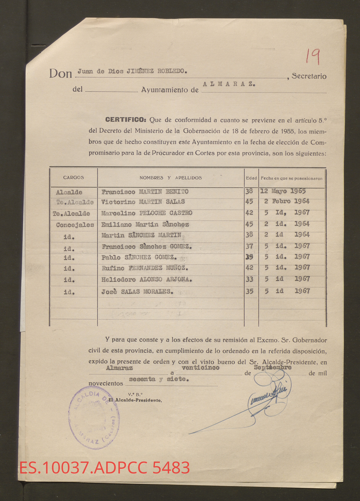

How is local power transformed during a political regime change? Investigating the architecture of local elites in Spain from Francoism to democracy (1939–1983).
Bridging Autocracy and Democracy
The Local Elites Across Political Regimes (LEaPReg) project addresses a critical gap in the study of political transitions: the role of local-level elites. While legal frameworks can change overnight, de facto political power is often far more resilient. Our research adopts a dual-focus approach to document this phenomenon in 20th-century Spain.
First, we reconstruct the machinery of local power during the Francoist Dictatorship (1939–1976), analyzing how the regime strategically appointed mayors and Falange local chiefs to ensure territorial control. Second, we examine the Transition (1976–1983) to understand why certain elites –from mayors to local councilors– successfully migrated to the new democratic system, the political labels they adopted, and the factors that led voters to validate their stay in power.
To achieve this, LEaPReg employs an innovative methodology that pairs historical research in of archival documentation with state-of-the-art Artificial Intelligence tools to digitize and structure historical sources, creating the most comprehensive database on Spanish historical municipal power to date.

ES.10037.ADPCC 5483 — Almaraz, 1967
Individual Project Overviews
Two interconnected research projects tracing the life cycle of political elites across regime change in Spain.
Appointment and Persistence of Autocratic Local Elites
This project investigates the strategic logic behind the Francoist regime's appointment of local officials. It explores how the dictatorship balanced population control with the distribution of patronage within its ruling coalition, and how these local support networks stabilized the regime over four decades.
Transitioning Elites? Local Persistence in the Spanish Democracy
By matching thousands of Francoist mayors and councilors with subsequent democratic election candidates, this project investigates how officials appointed by the dictatorship successfully converted their authoritarian influence into democratic political capital. It analyzes the determinants of this success and evaluates the consequences of this continuity on democratic elections, institutional quality, and the overall robustness of democratic governance at the local level.
The Research Team
A multidisciplinary team of political scientists and sociologists united by the study of elite persistence across political regimes.
Albert Falcó Gimeno
Principal Investigator (PI)Specialist in comparative politics, political economy, and voting behavior.
Pau Vall-Prat
Co-InvestigatorExpert in electoral behavior and territorial politics.
Mario Lozano
ResearcherResearcher specializing in judicial and political elites in Spain, combining historical and computational methods.
Alex Casadevall
ResearcherSpecialist in data management and analysis of local elite persistence in Spain.
Alba Huidobro
ResearcherResearch focuses on women's political representation under autocratic regimes and its democratic legacies.
Jaume Magre-Pont
ResearcherSpecialist in electoral institutions and the survival of authoritarian elites in democratic transitions.
Jordi Muñoz
ResearcherExpert in political sociology, national identity, and comparative democratization.
Publications & Working Papers
Peer-reviewed articles, working papers, and datasets produced by the LEaPReg team.
Dataset
Spanish Municipal Councils during Francoism (1939–1976)
The database compiles standardized information on the political composition of Spanish municipalities during the Francoist period. It is based on official documentation preserved in Spanish historical archives and is currently being expanded, with additional provinces to be incorporated in forthcoming updates.
Working Papers
Mayors as Autocratic Pawns
How do autocratic regimes consolidate control across their territory in the aftermath of democratic collapse? This paper argues that local political appointments are a primary strategic tool for securing territorial control. Using original data on mayoral appointments in early Francoist Spain (1940–1956), we show that areas classified by the regime as oppositional were more likely to receive loyalist appointees.
Authoritarian Power-Sharing and Democratization: The Case of the Transition Mayors in Spain
This paper examines how limited power-sharing under authoritarianism shapes political competition after democratization. We leverage a natural experiment created by the partial implementation of indirect mayoral elections in late-Francoist Spain, where only half of the municipalities effectively adopted the reform in 1976. Results show that municipalities exposed to the reform experienced greater party entry and representation in the founding democratic elections.
A Lasting Legacy: Women's Representation in Political Regime Transition
Does female political representation under autocratic regimes have long-lasting effects on democratic politics? Using a novel database detailing all women who were local councilors and mayors in the final years of the Francoist period, we show that the presence of women local politicians under autocracy paved the way for women to enter democratic politics after the regime transition—a differential lasting almost 20 years.
Voting Away the Past? Electoral Systems and the Survival of Authoritarian Elites
Why do authoritarian elites often survive democratic transitions? Using a regression discontinuity design, this paper identifies the causal effect of closed-list proportional representation versus open-list systems on elite persistence. Results indicate that CLPR increased the probability that former authoritarian mayors or their relatives remained in office by up to 14 percentage points.
When Autocratic Elites Meet Democracy: Evidence from Local Officials' Strategic Realignment in Spain's Democratic Transition
How do autocratic elites realign when democracy arrives unexpectedly? Using novel micro-level archival data on Francoist local officials matched to candidates in the first democratic municipal elections in Spain (1979), this paper shows that both individual assets accumulated under autocracy and local opportunity structures shape elites' strategic choices about which party to join in the new democracy.
Related Resources
Datasets and archival materials produced by the LEaPReg project, freely available for the research community.
Zenodo Dataset
Spanish Municipal Councils during Francoism (1939–1976)
An open-access repository providing names, occupations, and tenure dates for thousands of local representatives. Version 1.0 currently available for Girona, with additional provinces forthcoming.
Access Dataset →